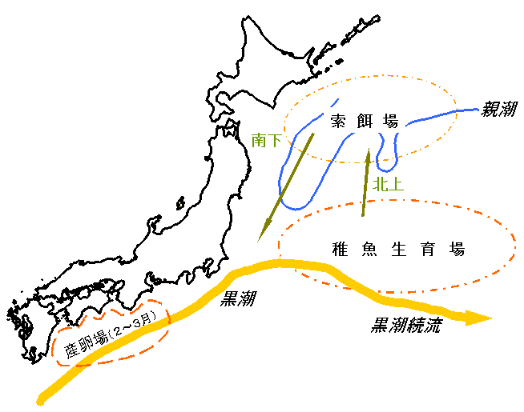

| ２ マイワシ資源（太平洋系群）の生態構造（模式図） |
|
資源の高水準期と低水準期でその分布・回遊は異なりますが、下図はマイワシの生態構造の概略を示したものです。 マイワシは、主に２〜３月に南部太平洋沿岸域及び黒潮域で産卵し、卵は黒潮に乗って孵化しつつ房総沖東方の黒潮続流域に運ばれます。稚魚は親潮と黒潮の混合する移行域で成育し、成長に伴って北上し索餌場に達します。また、親魚も南部太平洋沿岸から北上回遊し、索餌場に達します。晩夏以降、親魚、０歳魚は南下回遊し、三陸・常磐・銚子沖等でまき網漁業等によって漁獲されます。一部のマイワシは、地先群と呼ばれ、南部太平洋沿岸域で産卵・孵化・成育し、地域的な回遊に留まる群れもあると考えられています。親魚になるのは、資源が高水準期で２〜３歳、低水準期では１〜２歳で、寿命は７歳程度です。
 [前ページ] [次ページ] [1] [2] [3] 4 [5] [6] [7] [8] [9] [10] [11] [12] [13] [14] [15] [16] [17] |